정보처리기사(구) (2013-06-02 기출문제)
1과목: 데이터 베이스
1. 다음 SQL 명령 중 DDL에 해당하는 것만으로 나열된 것은?
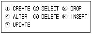
- ②, ④, ⑤, ⑥, ⑦
- ②, ⑤, ⑥, ⑦
- ①, ②, ⑥
- ①, ③, ④
(정답률: 79%)

2. 뷰(VIEW)에 대한 설명 중 옳은 내용 모두를 나열한 것은?
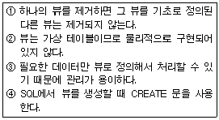
- ①
- ①, ②
- ②, ③, ④
- ①, ②, ③, ④
(정답률: 80%)
3. 후보 키에 대한 설명으로 옳지 않은 것은?
- 릴레이션의 기본 키와 대응되어 릴레이션 간의 참조 무결성 제약 조건을 표현하는데 사용되는 중요한 도구이다.
- 릴레이션의 후보 키는 유일성과 최소성을 모두 만족해야 한다.
- 하나의 릴레이션에 속하는 모든 튜플들은 중복된 값을 가질 수 없으므로 모든 릴레이션은 반드시 하나 이상의 후보 키를 갖는다.
- 릴레이션에서 튜플을 유일하게 구별해 주는 속성 또는 속성들의 조합을 의미한다.
(정답률: 48%)
4. 데이터베이스 환경 하에서 데이터 참조는 데이터베이스에 저장된 레코드들의 위치나 주소에 의해서가 아니라 사용자가 요구하는 데이터의 내용, 즉 데이터 값에 따라 참조된다는 데이터베이스의 특성은?
- Time Accessibility
- Continuous Evolution
- Concurrent Sharing
- Content Reference
(정답률: 84%)
5. 순차파일에 대한 옳은 설명 모두를 나열한 것은?
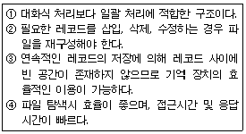
- ①, ④
- ①, ②, ③
- ②, ③, ④
- ①, ②, ③, ④
(정답률: 69%)
6. 다음 문장의 ( ) 안 내용으로 옳게 짝지어진 것은?
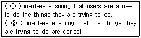
- ①Security ② integrity
- ①Security ② Revoke
- ①Integrity ② Transaction
- ①Integrity ② Revoke
(정답률: 67%)
7. 로킹(Locking) 기법에 대한 설명으로 옳지 않은 것은?
- 로킹의 대상이 되는 객체의 크기를 로킹 단위라고 한다.
- 로킹 단위가 작아지면 병행성 수준이 낮아진다.
- 데이터베이스도 로킹 단위가 될 수 있다.
- 로킹 단위가 커지면 로크 수가 작아 로킹 오버헤드가 감소한다.
(정답률: 81%)
8. 데이터베이스 설계에 대한 설명으로 옳지 않은 것은?
- 요구 조건 분석 단계는 사용자의 요구 조건을 수집하고 분석하여 사용자가 의도하는 데이터베이스의 용도를 파악해야 한다.
- 개념적 설계 단계에서는 트랜잭션 인터페이스 설계, 스키마의 평가 및 정제 등의 작업을 수행한다.
- 논리적 설계 단계에서는 개념적 설계 단계에서 만들어진 정보 구조로부터 특정 목표 DBMS가 처리 할 수 있는 스키마를 생성한다.
- 물리적 설계 단계에서는 저장 구조와 접근 경로 등을 결정한다.
(정답률: 68%)
9. 다음 자료에 대하여 선택(Selection) 정렬을 이용하여 오름차순으로 정렬하고자 한다. 1회전 후의 결과는?
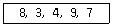
- 3, 4, 7, 8, 9
- 3, 4, 7, 9, 8
- 3, 4, 8, 9, 7
- 3, 8, 4, 9, 7
(정답률: 80%)
10. 트랜잭션의 특성으로 옳은 내용 모두를 나열한 것은?
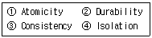
- ①, ②
- ①, ②, ④
- ①, ③, ④
- ①, ②, ③, ④
(정답률: 75%)
11. 다음 설명의 괄호 안 내용으로 옳게 짝지어진 것은?
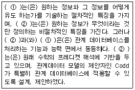
- ① 관계형 데이터 모델, ② 계층형 데이터 모델
- ① 계층형 데이터 모델, ② 관계형 데이터 모델
- ① 관계 대수, ② 관계 해석
- ① 관계 해석, ② 관계 대수
(정답률: 77%)
12. 데이터베이스의 정의로 옳은 내용 모두를 나열한 것은?
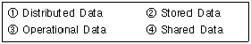
- ①, ②
- ①, ②, ④
- ②, ③, ④
- ①, ②, ③, ④
(정답률: 69%)
13. 한 릴레이션의 기본 키를 구성하는 어떠한 속성 값도 널(Null) 값이나 중복 값을 가질 수 없음을 의미하는 것은?
- 개체 무결성 제약 조건
- 참조 무결성 제약 조건
- 도메인 무결성 제약 조건
- 키 무결성 제약 조건
(정답률: 72%)
14. 데이터베이스 설계 순서로 옳은 것은?
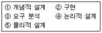
- ③→④→①→⑤→②
- ③→①→④→⑤→②
- ③→④→⑤→①→②
- ③→①→⑤→④→②
(정답률: 86%)
15. 다음 그림에서 트리의 차수는?
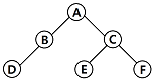
- 1
- 2
- 3
- 4
(정답률: 83%)
16. 릴레이션의 특징으로 거리가 먼 것은?
- 모든 튜플은 서로 다른 값을 갖는다.
- 모든 속성 값은 원자 값이다.
- 튜플 사이에는 순서가 없다.
- 각 속성은 유일한 이름을 가지며, 속성의 순서는 큰 의미가 있다.
(정답률: 86%)
17. 시스템 카탈로그에 대한 설명으로 옳지 않은 것은?
- 시스템 카탈로그는 DBMS가 스스로 생성하고 유지한다.
- 시스템 카탈로그 저장된 정보가 메타 데이터라고 한다.
- 시스템 카탈로그는 시스템 테이블이기 때문에 일반 사용자는 검색할 수 없다.
- 시스템 카탈로그를 자료 사전이라고도 한다.
(정답률: 82%)
18. 다음 설명이 의미하는 것은?
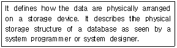
- Conceptual Schema
- External Schema
- Internal Schema
- Super Schema
(정답률: 68%)
19. 이진 검색 알고리즘의 특징이 아닌 것은?
- 피보나치수열에 따라 가감산을 이용하여 다음에 비교할 대상을 선정한다.
- 탐색 효율이 좋고 탐색 시간이 적게 소요된다.
- 검색할 데이터가 정렬되어 있어야 한다.
- 비교 횟수를 거듭할 때마다 검색 대상이 되는 데이터의 수가 절반으로 줄어든다.
(정답률: 66%)
20. 데이터베이스의 상태를 변환시키기 위하여 논리적 기능을 수행하는 하나의 작업 단위를 무엇이라고 하는가?
- 프로시저
- 트랜잭션
- 모듈
- 도메인
(정답률: 83%)
2과목: 전자 계산기 구조
21. 입출력이 실제로 일어나고 있을 때는 채널 제어기가 임의의 시점에서 볼 때 마치 어느 한 입출력 장치의 전용인 것처럼 운용되는 채널은?
- Interlock channel
- Crossbar channel
- Selector channel
- I/O channel
(정답률: 45%)
22. 다음 중 채널 명령어(CCW)로 알 수 있는 내용이 아닌 것은?
- 명령코드
- 데이터 주소
- 데이터 전송속도
- 데이터 크기
(정답률: 62%)
23. cache memory에 대한 설명과 가장 관계가 깊은 것은?
- 내용에 의해서 access되는 memory unit이다.
- 대형 computer system에서만 사용되는 개념이다.
- 중앙처리장치가 자주 접근하거나 최근에 접근한 메모리 블록을 저장하는 초고속 기억장치이다.
- memory에 접근을 각 module별로 액세스 하도록 하는 기억장치이다.
(정답률: 74%)
24. 연산 방식에 대한 설명 중 옳지 않은 것은?
- 직렬 연산 방식은 병렬 연산 방식보다 시간이 많이 소요된다.
- 병렬 연산 방식은 직렬 연산 방식에 비해 속도가 느리다.
- 직렬 연산 방식은 hardware가 간단하다.
- 병렬 연산 방식은 hardware가 복잡하다.
(정답률: 62%)
25. 다음 내용은 LOAD 기능을 수행하는 마이크로 오퍼레이션이다. 이 가운데 어떤 명령어든지 수행되기 위해서는 반드시 거쳐야 하는 단계끼리 나열한 것은? (단, Rs1, Rd, S2 : 레지스터 주소)
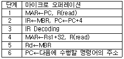
- 1, 2, 3, 6
- 2, 3, 4, 6
- 3, 4, 5, 6
- 1, 3, 5, 6
(정답률: 47%)
26. 두 개의 데이터를 혼합하거나 일부에 삽입하는데 사용되는 연산은?
- AND 연산
- OR 연산
- MOVE 연산
- Complement 연산
(정답률: 59%)
27. 메이저 상태(major state)에서 제어 데이터에 대한 설명으로 잘못된 것은?
- FETCH state에서 중앙처리장치의 제어점을 제어하기 위한 제어 데이터는 명령어이다.
- INDIRECT state에서 다음 상태로 변천하는 것을 제어하는 데이터는 간접주소와 직접주소를 구별하는 비트이다.
- EXECUTE state에서 다음 상태로 변천하는 것을 제어하는 데이터는 인터럽트 요청 신호이다.
- INTERRUPT state에서는 제어 데이터에 의하여 fetch state로 변한다.
(정답률: 36%)
28. 기억장치 중 CAM(Content Addressable Memory)이라고 하는 것은?
- cache 기억장치
- associative 기억장치
- 가상기억장치
- 주기억장치
(정답률: 55%)
29. 다음 중 overflow가 생기는 경우는? (단, 최상위 비트는 부호비트임)
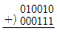
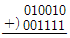
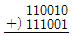
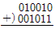
(정답률: 39%)
30. 메모리로부터 읽혀진 명령어의 오퍼레이션 코드(OP-code)는 CPU의 어느 레지스터에 들어가는가?
- 누산기
- 임시 레지스터
- 연산 논리장치
- 인스트럭션 레지스터
(정답률: 53%)
31. 사이클 스틸과 인터럽트의 차이를 옳게 설명한 것은?
- 사이클 스틸은 주기억장치의 사이클 타임을 중앙처리장치로부터 DMA가 일시적으로 빼앗는 것으로 중앙처리장치는 주기억장치에 접근할 수 없다.
- 사이클 스틸은 중앙처리장치의 상태보존이 필요하다.
- 인터럽트는 중앙처리장치의 상태보존이 필요 없다.
- 인터럽트는 정전의 경우와는 관계없다.
(정답률: 58%)
32. 실수 0.011012 을 32비트 부동 소수점으로 표현하려고 한다. 지수부에 들어갈 알맞은 표현은? (단, 바이어스된 지수(biased exponent)는 011111112로 나타내며 IEEE754 표준을 따른다.
- 011111002
- 011111012
- 011111102
- 100000002
(정답률: 45%)
33. 동적 램(RAM) 에 관한 설명 중 옳지 않은 것은?
- SRAM에 비해 기억 용량이 크다.
- 쌍안정 논리 회로의 성질을 응용한다.
- 주기억 장치 구성에 사용된다.
- SRAM에 비해 속도가 느리다.
(정답률: 56%)
34. 다음 회로의 기능으로 옳은 것은?
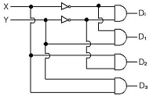
- decoder
- multiplexe
- encoder
- shifter
(정답률: 60%)
35. 입력태스크(task)를 일련의 서브태스크(sub task)로 나누어 각 서브태스크는 특별한 하드웨어를 통해 동시에 동작할 수 있도록 하여 현재 디지털 컴퓨터의 처리 능력을 크게 향상시키는데 기여한 기법은?
- pipeline
- dataflow
- array processing
- memory hierarchy
(정답률: 60%)
36. CISC(Complex Instruction Set Computer) 와 RISC(Reduced Instruction Set Computer)에 대한 비교 설명으로 옳지 않은 것은?
- CISC-명령어와 주소지정 방식을 보다 복잡하게 하여 풍부한 기능을 소유하도록 한다. RISC-아주 간단한 명령들만 가지고 매우 빠르게 동작하도록 한다.
- CISC-거의 모든 명령어가 레지스터를 대상으로 하며 메모리의 접근을 최소로 한다. RISC-처리 속도를 증가시키기 위해서 독특한 형태로 다기능을 지원하는 메모리와 레지스터를 대상으로 한다.
- CISC-명령어의 수가 수 백 개에서 많게는 1500여 개로 매우 다양하다. RISC-명령어의 수가 CISC에 비해서 약 30%정도며 명령어 형식도 최소한 줄였다.
- CISC-데이터 경로가 메모리로부터 레지스터, ALU, 버스로 연결되는 등 다양하다. RISC-데이터 경로 사이클을 단일화하며 사이클 time을 최소화 한다.
(정답률: 56%)
37. 다중처리기 상호 연결 방법 중 시분할 공유버스를 설명한 것은?
- 시분할 공유와 기타방법의 혼합
- Multiprocessor를 비교적 경제적인 망으로 구성
- 공유버스 시스템에서 버스의 수를 기억장치의 수만큼 증가시킨 구조
- 프로세서, 기억장치, 입출력 장치들 간에 하나의 버스 통신로만을 제공하는 방법
(정답률: 50%)
38. Flynn의 컴퓨터 구조 분류에서 여러 개의 처리기에서 수행되는 인스트럭션은 서로 다르나 전체적으로 하나의 데이터 스트림을 가지는 형태는?
- MIMD
- MISD
- SIMD
- SISD
(정답률: 71%)
39. 인터럽트 우선순위를 결정하는 Polling 방식에 대한 설명으로 옳지 않은 것은?
- 많은 인터럽트 발생시 처리시간 및 반응시간이 매우 빠르다.
- S/W 적으로 CPU가 각 장치 하나하나를 차례로 조사하는 방식이다.
- 조사순위가 우선순위가 된다.
- 모든 인터럽트를 위한 공통의 서비스루틴을 갖고 있다.
(정답률: 50%)
40. 복수 모듈 기억장치의 특징으로 옳지 않은 것은?
- 주기억장치와 CPU의 속도차의 문제점을 개선한다.
- 기억장치의 버스를 시분할하여 사용한다.
- 병렬 판독 논리회로를 가지고 있기 때문에 하드웨어 비용이 증가한다.
- 기억장소의 접근을 보다 빠르게 한다.
(정답률: 37%)
3과목: 운영체제
41. 분산 운영체제의 구조 중 완전 연결(Fully Connection)에 대한 설명으로 옳지 않은 것은?
- 모든 사이트는 시스템 안의 다른 모든 사이트와 직접 연결된다.
- 사이트와 사이트간 메시지를 전달하는데 사용되는 통신비용이 많이 소요된다.
- 사이트들 간의 메시지 전달이 매우 빠르다.
- 사이트 간의 연결은 여러 회선이 존재하므로 신뢰성이 높다.
(정답률: 54%)
42. 다음 설명의 ( ) 안 내용으로 가장 적합한 것은?
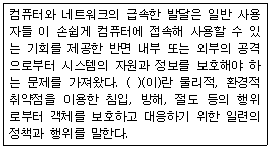
- 보증
- 제어
- 암호
- 보안
(정답률: 82%)
43. 직접 파일(direct file)에 대한 설명으로 거리가 먼 것은?
- 직접 접근 기억장치의 물리적 주소를 통해 직접 레코드에 접근한다.
- 키에 일정한 함수를 적용하여 상대 레코드 주소를 얻고, 그 주소를 레코드에 저장하는 파일 구조이다.
- 직접 접근 기억장치의 물리적 구조에 대한 지식이 필요하다.
- 직접 파일에 적합한 장치로는 자기테이프를 주로 사용한다.
(정답률: 49%)
44. 운영체제의 성능평가 요인 중 다음 설명에 해당하는 것은?
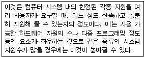
- Throughput
- Turn around Time
- Availability
- Reliability
(정답률: 63%)
45. 디렉토리 구조 중 각각의 사용자에 대한 MFD와 각 사용자 별로 만들어지는 UFD로 구성되며, MFD는 각 사용자의 이름이나 계정 번호 및 UFD를 가리키는 포인터를 갖고 있으며, UFD는 오직 한 사용자가 갖고 있는 파일들에 대한 파일 정보만 갖고 있는 것은?
- 트리 디렉토리 구조
- 일반적인 그래프 디렉토리 구조
- 2단계 디렉토리 구조
- 비순환 그래프 디렉토리 구조
(정답률: 71%)
46. UNIX에 관한 설명으로 옳지 않은 것은?
- 쉘(shell)은 사용자와 시스템 간의 대화를 가능케 해주는 UNIX 시스템의 메커니즘이다.
- UNIX 시스템은 루트 노드를 시발로 하는 계층적 파일 시스템 구조를 사용한다.
- 커널(kernel)은 프로세스 관리, 기억장치 관리, 입출력 관리 등의 기능을 수행한다.
- UNIX 파일 시스템에서 각 파일에 대한 파일 소유자, 파일 크기, 파일 생성 시간에 대한 정보는 데이터 블록에 저장된다.
(정답률: 47%)
47. UNIX에서 파일 시스템의 무결성을 검사하는 명령은?
- chown
- cat
- fsck
- mount
(정답률: 65%)
48. 프로세서의 상호 연결 구조 중 하이퍼 큐브 구조에서 각 CPU가 16개의 연결점을 가질 경우 CPU의 총 개수는?
- 4
- 16
- 32
- 65536
(정답률: 53%)
49. 페이지 부재가 너무 자주 일어나 프로세스가 실행에 보내는 시간보다 페이지 교체에 보내는 시간이 더 많은 상황을 의미하는 것은?
- 스풀링
- 스래싱
- 페이징
- 교착상태
(정답률: 68%)
50. 운영체제의 기능 중 옳은 내용으로만 짝지어진 것은?
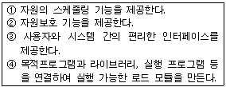
- ①, ④
- ①, ②, ③
- ①, ③, ④
- ①, ②, ③, ④
(정답률: 61%)
51. HRN(Highest Response-ratio Next) 방식으로 스케줄링 할 경우, 입력된 작업이 다음과 같을 때 우선순위가 가장 높은 작업은?
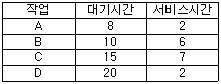
- A
- B
- C
- D
(정답률: 75%)
52. 3개의 페이지를 수용할 수 있는 주기억장치가 있으며, 초기에는 모두 비어 있다고 가정한다. 다음의 순서로 페이지 참조가 발생할 때, FIF0 페이지 교체 알고리즘을 사용할 경우 몇 번의 페이지 결함이 발생 하는가?
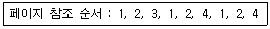
- 4
- 5
- 6
- 7
(정답률: 65%)
53. 주기억장치 관리기법인 First-fit, Best-fit Worst-fit 방법을 각각 적용할 경우 10K의 프로그램이 할당될 영역이 순서대로 옳게 짝지어진 것은?
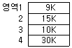
- 2, 4, 2
- 2, 3, 2
- 3, 3, 3
- 2, 3, 4
(정답률: 80%)
54. 교착상태의 해결 방법 중 점유 및 대기 부정, 비선점 부정, 환형대기 부정 등은 어떤 기법에 해당하는가?
- Recovery
- Avoidance
- Prevention
- Detection
(정답률: 55%)
55. 구역성(Locality)에 대한 설명으로 옳지 않은 것은?
- 실행 중인 프로세스가 일정 시간 동안에 참조하는 페이지의 집합을 의미한다.
- 시간 구역성과 공간 구역성이 있다.
- 캐시 메모리 시스템의 이론적 근거이다.
- Denning 교수에 의해 구역성의 개념이 증명되었다.
(정답률: 47%)
56. UNIX에서 파일의 사용 허가 지정에 관한 명령어는?
- mv
- ls
- chmod
- fork
(정답률: 74%)
57. 프로세스 제어블록(Process Control Block)에 대한 옳은 설명으로만 짝지어진 것은?
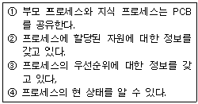
- ①, ②
- ①, ③, ④
- ②, ③, ④
- ①, ②, ③, ④
(정답률: 58%)
58. 운영체제의 운용 기법 중 라운드 로빈(Round Robin)에 대한 옳은 설명으로만 짝지어진 것은?(문제 오류 입니다. 정답은 4번 입니다. 추후 문제 복원하여 두겠습니다.)
- 일괄 처리 시스템
- 다중 프로그래밍 시스템
- 실시간 처리 시스템
- 시분할 시스템
(정답률: 79%)
59. 현재 헤드 위치가 53에 있고 트랙 0번 방향으로 이동 중이었다. 요청 대기 큐에 다음과 같은 순서의 액세스 요청이 대기 중일 때 SSTF 스케줄링 알고리즘을 사용한다면 헤드의 총 이동거리는 얼마인가? (단, 트랙 0번이 가장 안쪽에 위치한다.)
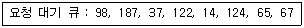
- 202
- 236
- 240
- 320
(정답률: 52%)
60. 다중 처리기 운영체제 구성에서 주/중(Master/Slave) 처리기 시스템에 대한 설명으로 옳지 않은 것은?
- 주, 종 프로세서 모두 입출력을 수행하므로 대칭구조를 갖는다.
- 주프로세서는 입, 출력과 연산을 담당한다.
- 주프로세서는 운영체제를 수행한다.
- 주프로세서에 문제가 발생하면 전체 시스템이 멈춘다.
(정답률: 74%)
4과목: 소프트웨어 공학
61. 다음 설명에 해당하는 것은?
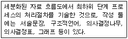
- ERD
- Mini-spec
- DD
- STD
(정답률: 52%)
62. 두 명의 개발자가 5개월에 걸쳐 10000 라인의 코드를 개발하였을 때, 월별(person-month) 생산성 측정을 위한 계산 방식으로 가장 적합한 것은?
- 10000 / 2
- 10000 / 5
- (2×10000) / 5
- 10000 / (5×2)
(정답률: 74%)
63. 자료 흐름도에 대한 설명으로 옳지 않은 것은?
- 자료 흐름은 점선으로 표시한다.
- 프로세스의 계층화가 가능하다.
- 버블 차트라고도 한다.
- 배경도를 통하여 전체 시스템의 범위를 표현한다.
(정답률: 61%)
64. 화이트 박스(WHITE BOX) 테스트 기법이 아닌 것은?
- 데이터 흐름 검사(DATA FLOW TEST)
- 루프 검사(LOOP TEST)
- 기초 경로 검사(BASIC PATH TEST)
- 동치 분할 검사(EQUIVALENCE PARTITIONING TEST)
(정답률: 72%)
65. 검증(validation) 검사 기법 중 최종 사용자가 여러 사용자 앞에서 실 업무를 가지고 소프트웨어에 대한 검사를 직접 수행하는 기법은?
- 베타 검사
- 알파 검사
- 형상 검사
- 단위 검사
(정답률: 66%)
66. 객체지향 설계에 있어서 정보은폐(information hiding)의 가장 근본적인 목적은?
- 코드를 개선하기 위하여
- 프로그램의 길이를 짧게 하기 위하여
- 고려되지 않은 영향(side effect)들을 최소화하기 위하여
- 인터페이스를 최소화하기 위하여
(정답률: 73%)
67. 위험 모니터링(monitoring)의 의미로 가장 적절한 것은?
- 위험을 이해하는 것
- 위험 요소를 인정하지 않는 것
- 첫 번째 조치로 위험을 피할 수 있도록 하는 것
- 위험 요소 징후들에 대하여 계속적으로 인지하는 것
(정답률: 78%)
68. 객체지향 분석 방법론 중 E-R 다이어그램을 사용하여 객체의 행위를 모델링하며, 객체 식별, 구조식별, 주제 정의, 속성과 인스턴스 연결 정의, 연산과 메시지 연결 정의 등의 과정으로 구성되는 것은?
- Coad와 Yourdon 방법
- Booch 방법
- Jacobson 방법
- Wirfs-Brock 방법
(정답률: 59%)
69. CASE에 대한 설명으로 옳지 않은 것은?
- 소프트웨어 모듈의 재사용성이 향상된다.
- 자동화된 기법을 통해 소프트웨어 품질이 향상된다.
- 소프트웨어 사용자들이 소프트웨어 사용 방법을 신속히 숙지할 수 있도록 개발된 자동화 패키지이다.
- 소프트웨어 유지보수를 간편하게 수행할 수 있다.
(정답률: 57%)
70. 유지보수의 종류 중 소프트웨어 테스팅 동안 밝혀지지 않은 모든 잠재적인 오류를 수정하기 위한 보수 형태로서 오류의 수정과 진단을 포함하는 것은?
- Adaptive maintenance
- Perfective maintenance
- preventive maintenance
- Corrective maintenance
(정답률: 58%)
71. 소프트웨어 재공학 활동 중 소프트웨어 기능을 변경하지 않으면서 소프트웨어를 형태에 맞게 수정하는 활동으로서 상대적으로 같은 추상적 수준에서 하나의 표현을 다른 표현 형태로 바꾸는 것은?
- 분석
- 역공학
- 이식
- 재구성
(정답률: 59%)
72. 바람직한 소프트웨어 설계 지침이 아닌 것은?
- 적당한 모듈 크기를 유지한다.
- 모듈 간의 접속 관계를 분석하여 복잡도와 중복을 줄인다.
- 모듈 간의 결합도는 강할수록 바람직하다.
- 모듈 간의 효과적인 제어를 위해 설계에서 계층적 자료 조직이 제시되어야 한다.
(정답률: 80%)
73. 어떤 모듈이 다른 모듈의 내부 논리 조직을 제어하기 위한 목적으로 제어신호를 이용하여 통신하는 경우이며, 하위 모듈에서 상위 모듈로 제어신호가 이동하여 상위 모듈에게 처리 명령을 부여하는 권리 전도현상이 발생하게 되는 결합도는?
- Data Coupling
- Stamp Coupling
- Control Coupling
- Common Coupling
(정답률: 64%)
74. 다음 설명에 해당하는 생명주기 모형은?
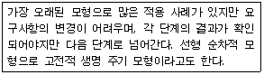
- 포르토타입 모형(Prototype Model)
- 코코모 모형(Cocomo Model)
- 폭포수 모형(Waterfall Model)
- 점진적 모형(Spiral Model)
(정답률: 71%)
75. 소프트웨어를 재사용함으로써 얻을 수 있는 이점으로 거리가 먼 것은?
- 생산성 증가
- 소프트웨어 품질 향상
- 새로운 개발 방법론 도입 용이
- 프로젝트 문서 공유
(정답률: 77%)
76. 소프트웨어 위기 발생요인과 거리가 먼 것은?
- 소프트웨어 개발 적체 현상
- 프로젝트 개발 일정과 예산 측정의 어려움
- 소프트웨어 규모의 증대와 복잡도에 따른 개발 비용 감소
- 소프트웨어 생산성 기술의 낙후
(정답률: 73%)
77. 정형 기술 검토(FTR)의 지침 사항으로 옳은 내용 모두를 나열한 것은?
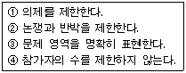
- ①, ④
- ①, ②, ③
- ①, ②, ④
- ①, ②, ③, ④
(정답률: 75%)
78. 소프트웨어 품질 목표 중 정해진 조건하에서 소프트웨어 제품의 일정한 성능과 자원 소요량의 관계에 관한 속성, 즉 요구되는 성능과 자원 소요량의 관계에 관한 속성, 즉 요구되는 기능을 수행하기 위해 필요한 자원의 소요 정도를 의미하는 것은?
- Usability
- Reliability
- Efficiency
- Functionality
(정답률: 52%)
79. 객체 지향 기법에서 하나 이상의 유사한 객체들을 묶어서 하나의 공통된 특성을 표현한 것을 무엇이라고 하는가?
- 클래스
- 함수
- 메소드
- 메시지
(정답률: 78%)
80. 소프트웨어 프로젝트 관리를 효과적으로 수행하는데 필요한 3P와 거리가 먼 것은?
- PROBLEM
- PROCESS
- PASSING
- PEOPLE
(정답률: 80%)
5과목: 데이터 통신
81. IP(Internet Protocol) 프로토콜에 대한 설명으로 틀린 것은?
- 신뢰성이 부족한 비 연결형 서비스를 제공하기 때문에 상위 프로토콜에서 이러한 단점을 보완해야 한다.
- IP프로토콜은 직접전송과 간접전송으로 나누어지며, 직접전송은 패킷의 최종목적지와 같은 물리적인 네트워크에 연결된 라우터에 도달할 때 까지를 말한다.
- 송신지가 여러 개인 데이터 그램을 보내면서 순서가 뒤바뀌어 도달할 수 있다.
- 각 데이터 그램이 독립적으로 처리되고 목적지까지 다른 경로를 통해 전송될 수 있다.
(정답률: 45%)
82. TCP/IP 프로토콜 구조에 해당하지 않는 것은?
- 응용 계층
- 전송 계층
- 인터넷 계층
- 표현 계층
(정답률: 52%)
83. 이동 단말이나 PDA와 같이 소형 무선 단말기 상에서 인터넷을 이용할 수 있도록 해주는 포로토콜의 총칭은?
- POP
- WAP
- SMTP
- FTP
(정답률: 72%)
84. HDLC 프레임 구성에서 플래그는 전송 프레임의 시작과 끝을 나타낸다. 이 플래그의 고유 비트 패턴은?
- 01111110
- 11111111
- 00000000
- 10000001
(정답률: 61%)
85. 패킷교환망에서 경로 배정 방법 중 망의 상태를 반영하여 동적으로 전송 경로를 결정하는 것은?
- 적응 경로 배정(adaptive routing)
- 고정 경로 배정(fixed routing)
- 범람 경로 배정(flooding routing)
- 임의 경로 배정(random routing)
(정답률: 61%)
86. 데이터 전송 중 발생한 에러를 검출하는 기법이 아닌 것은?
- Parity Check
- Block Sum Check
- Slide Window Check
- Cyclic Redundancy Check
(정답률: 63%)
87. HDLC 프레임 중 전송되는 정보프레임에 대한 흐름제어와 오류제어를 위해 사용되는 것은?
- Information Frame
- Control Frame
- Supervisory Frame
- Unnumbered Frame
(정답률: 41%)
88. 데이터 통신에서 오류의 발생 유무만을 판정하는 오류검출 기법으로 틀린 것은?
- Parity Check
- Cyclic Redundancy Check
- Block Sum Check
- Forward Error Correction Check
(정답률: 53%)
89. 다음 중 A, B, C, D 문자 전송 시 홀수 패리티 비트 검사에서 에러가 발생하는 문자는?
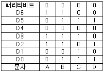
- A
- B
- C
- D
(정답률: 73%)
90. 주파수 분할 방식(FDM)에서 Guard Band가 필요한 이유는?
- 주파수 대역폭을 넓히기 위함이다.
- 신호의 세기를 크게 하기 위함이다.
- 채널 간섭을 막기 위함이다.
- 많은 채널을 좁은 주파수 대역에 쓰기 위함이다.
(정답률: 73%)
91. 보오(baud) 속도가 1400 이고, 한 번에 3개의 비트를 전송할 때 데이터 신호속도(bps)는 얼마인가?
- 1200
- 2800
- 4200
- 5600
(정답률: 80%)
92. 네트워크상의 각 호스트가 IP 주소와 링크 레벨의 주소 사이의 대응을 테이블로 구성할 수 있도록 하기 위해 사용되는 프로토콜은?
- ARP(Address Resolution Protocol)
- ICMP(Internet Control Message Protocol)
- IGMP(Internet Group Management Protocol)
- SNMP(Simple Network Management Protocol)
(정답률: 45%)
93. 데이터 통신 방식에 대한 설명으로 가장 옳은 것은?
- 전이중 통신 방식은 통신 회선의 효율이 가장 높으며 전화 등에 사용된다.
- 반이중 통신 방식의 예로는 TV, Radio, 무전기 등 이 있다.
- 단방향 통신 방식이나 반이중 통신 방식의 경우 반드시 4선식 회선이 필요하다.
- 전이중 통신 방식은 양쪽 방향으로 신호의 전송이 가능하기는 하나 어떤 순간에는 반드시 한쪽 방향으로만 전송이 이루어지는 경우이다.
(정답률: 59%)
94. 회선구성 방식 중 두 개의 스테이션 간 별도의 회선을 사용하여 1대 1로 연결하는 가장 보편적인 방식은?
- 멀티드롭 링크
- 멀티포인트 링크
- 점대점 링크
- 균형 링크
(정답률: 80%)
95. 데이터 프레임의 정확한 수신 여부를 매번 확인하면서 다음 프레임을 전송해 나가는 ARQ 방식은?
- Go-back-N ARQ
- Selective-Repeat ARQ
- Distribute ARQ
- Stop-Wait ARQ
(정답률: 69%)
96. TCP와 UDP에 대한 설명으로 틀린 것은?
- TCP는 전이중 서비스를 제공한다.
- UDP는 연결형 서비스이다.
- TCP는 신뢰성 있는 전송 계층 프로토콜이다.
- UDP는 검사 합을 제외하고 오류제어 메커니즘이 없다.
(정답률: 56%)
97. 패킷을 목적지까지 전달하기 위해 사용되는 라우팅 프로토콜은?
- ICMP
- RIP
- ARP
- HTTP
(정답률: 59%)
98. 국(station) 간의 관계가 주/종 관계일 때 종국이 데이터를 보내려 한다면 먼저 주국으로부터 받아야 하는 신호는?
- ACK
- ENQ
- Poll
- SEL
(정답률: 43%)
99. 아날로그 데이터를 아날로그 신호로 변환하는 변조방식이 아닌 것은?
- AM
- TM
- FM
- PM
(정답률: 67%)
100. 비동기 전송방식에서 스타트(start)와 스톱(stop) 신호의 필요성에 대하여 가장 잘 설명한 것은?
- 메시지 단위로 정보를 전송하기 위해 사용한다.
- 정보단위의 하나이므로 사용한다.
- 바이트(byte)와 바이트(byte) 사이를 구분하기 위하여 사용한다.
- 비트(bit)를 표본화하기 위하여 사용한다.
(정답률: 52%)
① CREATE TABLE : 새로운 테이블을 생성하는 명령어이므로 DDL에 해당한다.
② SELECT : 데이터를 조회하는 명령어이므로 DDL에 해당하지 않는다.
③ ALTER TABLE : 테이블의 구조를 변경하는 명령어이므로 DDL에 해당한다.
④ DROP TABLE : 테이블을 삭제하는 명령어이므로 DDL에 해당한다.
⑤ INSERT INTO : 데이터를 삽입하는 명령어이므로 DDL에 해당하지 않는다.
⑥ UPDATE : 데이터를 수정하는 명령어이므로 DDL에 해당하지 않는다.
⑦ DELETE : 데이터를 삭제하는 명령어이므로 DDL에 해당하지 않는다.
따라서 정답은 "①, ③, ④"이다.